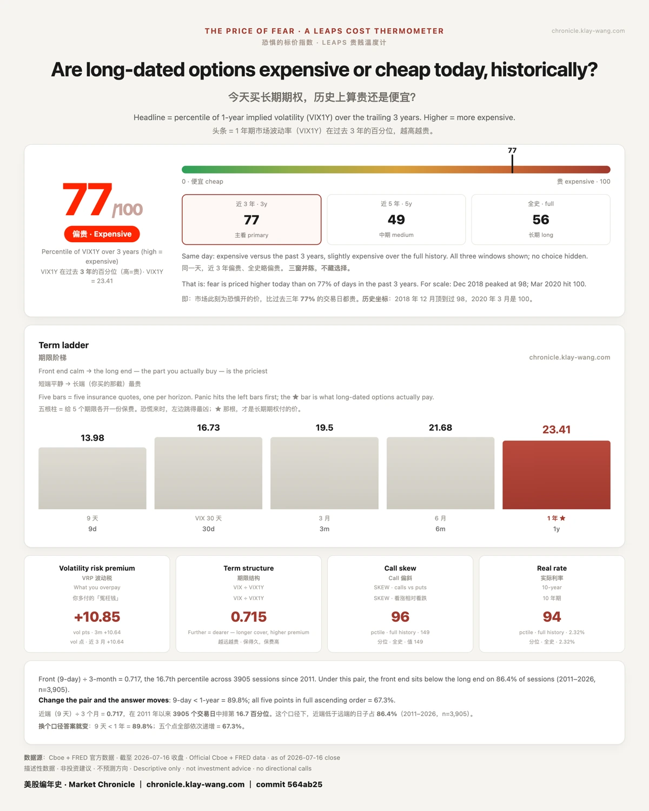
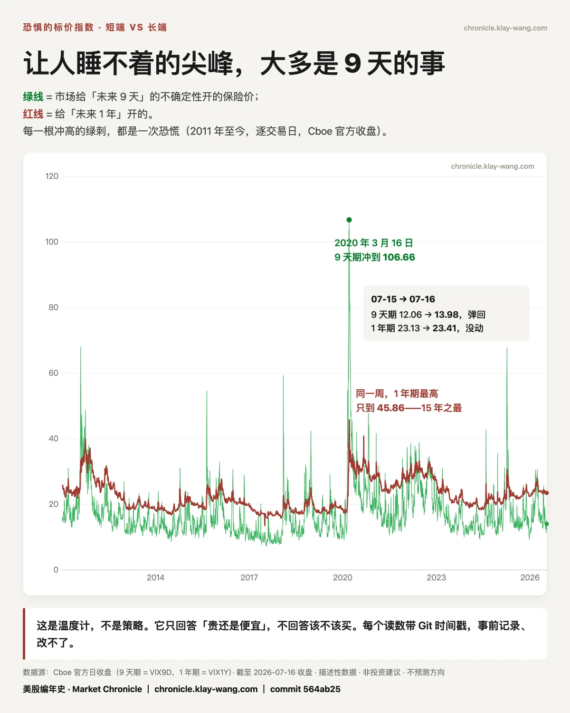

最近，你会读到至少十种下跌的原因。我一种都不知道，知道的人其实也不多。被问最多的是：跌到头了吗。到没到头，我不知道，也没人知道。
我只知道，恐惧的标价：今天 77/100（偏贵；= 1 年期波动率在过去 3 年的百分位）；2018 年 12 月是 98，2020 年 3 月是 100。按 1 年期波动率的收盘水平算，2011 年以来的 3906 个交易日里，比今天更吓人的有 1439 天：63% 的日子比今天平静，37% 比今天更凶。
信仰不需要别人同意，但值得知道对手盘的报价：美光的期权持仓里，押跌的是押涨的 1.8 倍（同组其他票只有 0.4–0.8）。你的信仰有明码标价的反方。
今天不是没有先例的一天。它有坐标，有同类，有价格。看清怕的价格，不用直视亏损，也能知道自己在地图上哪儿。
坐标每天更新，判断永远是你自己的。
